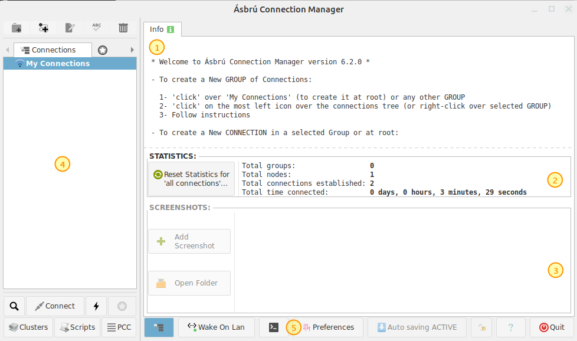
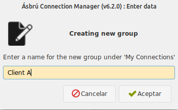
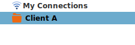
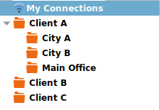
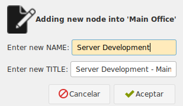
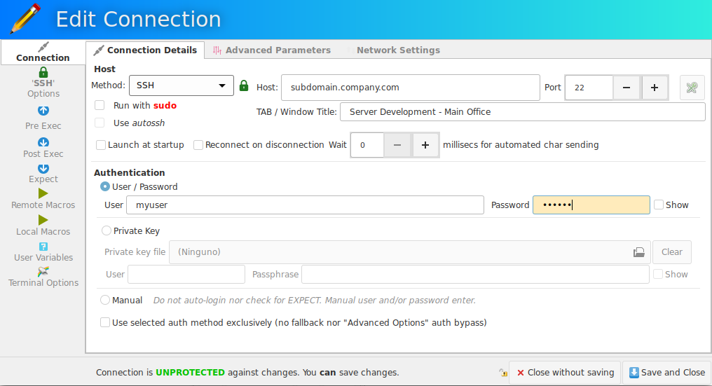
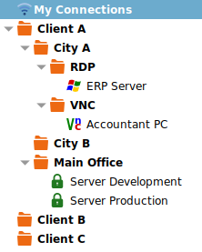

Quick Start
Standard Interface¶
When you start Ásbrú for the first time, you'll see a standard interface similar to the next image.

- (1) Info tab
- On start it gives general instructions on how to create your first connection.
- When you select/open a connection will allow you to type and save notes.
- (2) Statistics
- This section shows some statistics about your usage
- (3) Screenshots
- This section shows thumbnails of your currently saved screenshots
- (4) Your existing connections
- Top toolbar : from left to right
- Create a new group
- Create a new connection configuration
- Edit an existing connection
- Rename a node in the connections list (you can rename groups or connections)
- Delete a current node (group / connection)
- Connections
- This tab shows all your currently configured connections
- Double click on an existing connection to launch the session
- Double clic on a group to expand/contract its children -Select and node and right click to show a popup menu with available options for the current node
- This tab shows all your currently configured connections
- Favourites
- List of connections that you have marked as favourite connections
- History
- List of must recent opened session
- Clusters
- Listo of current configured clusters (clusters are groups of connections that will open simultaneously and will share keystrokes and mouse events)
- Top toolbar : from left to right
- (5) Preferences
- Access to the configuration settings that allows you to customize the behavior, appearance and tune some actions to your particular needs.
Connection list management¶
- Click on My Connections to create a new group or connection at root level.
- Clic on a current existing group to create a new group or connection at group level
- Select a node
- click on any of the top toolbar buttons (add, delete, rename, edit)
- right click and select desireg action (add, delete, rename, edit)
Recommended
Always create groups at root level.
This will allow you to organize your connections in some meaningful order.
Example of a Client driven configuration tree:
- Client Name
- Main Office
- VNC
- vnc PC1
- vnc Shipment Scale
- RDP
- rdp PC2
- ssh Server
- ssh SQL Server
- VNC
- Plant on City A
- ssh Server
- ssh RaspBerryPi
- ssh Shipment scale
- Plant on City B
- ssh Server
- ssh Backups
- Main Office
- Client B
- ssh Server A
- ssh Server B
- Client C
- ssh Server A
- ssh Server B
Choose the logic that best fits you, some possible organization trees
- Connection Type (ssh,vnc,rdp) > Client (client names) > Locations (locations if exist)
- Client > Service Type (ssh, sqlserver, etc)
- Project Name > Client Name > Services
Create a group¶
- Click on an existing group or My Connections (root level).
- Click on
add groupbutton or right click on selected group - Add a name to your group
- Click "Accept"

Connection list after

Add more groups

Create Connections¶
We will show the basic procedure to configure a basic ssh connection, there is a dedicated section for each type of connection with full details on how to configure more complex one.
- Click on a group where you want to add your current ssh connection
- Click on the Add connection icon. Or right click on the group and select "Add connection"
Give your connection a name that will hint you where will you be connecting

Configure your connection

Click on "Save and Close" button
Example of a connections tree after several connections have been added

Editing the connection list¶
To move a connection or full group from one place in the tree to another.¶
- Select a connection or full group
<Ctrl-X>to cut the node (or right click Cut)<Ctrl-V>to paste the node in the new location
To copy an existing connection so you can replace some parameters¶
- Select a connection
<Ctrl-C>to copy the node (or right click Copy)<Ctrl-V>to paste the node in the new location
To clone an existing connection¶
- Select a connection
<Ctrl-D>to duplicate connection (or right click Clone Connection)
Important notes
gnome-shell requires that a tray extension be installed to be able to show the icon on the tray.
If you do not install the extension, and activate "hide to tray on close", your will have no access to the main window anymore.
Ásrbú knows about some of this extensions and will try to detect them. If they are not available, the close to tray icon option, will minimize the Window instead of hide it.